이 모드에 대하여
26SMP 월드에서 쓰던 데이터팩 다섯 개(비행 · 음식 · 경험치 · 집 · 도구)를 설계서 삼아 Fabric 모드로 다시 만들었습니다. 이름은 부적을 뜻하는 탈리스만에서 왔습니다.
하는 일은 하나입니다. 황금 당근 81개, 불사의 토템 81개처럼 크고 분명한 목표를 걸고, 다 모으면 죽어도 잃지 않는 편의를 줍니다. 새 차원도 새 광석도 없이, 재료는 전부 바닐라 야생에서 나옵니다.
평소처럼 야생, 그 사이사이에 다음 목표.
- 평소 야생채굴 · 농사 · 탐험 · 보스로 바닐라 재료가 쌓인다
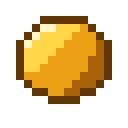
조각재료 9개 → 조각 1개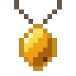
부적 · 무한 도구조각 9개 → 잃지 않는 영구 편의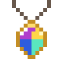
세트 · 합성같이 지니면 세트 효과, 넷을 합치면 만물의 부적- 보스와 다음 목표강화 위더 · 공허 고래 · 강화 드래곤 · 모래 지네, 보스마다 보스 장비 하나
세 가지 원칙
-
바닐라 야생 그대로
새 차원 · 새 광석 · 기술 트리가 없습니다. 재료는 평소 하던 채굴 · 농사 · 탐험 · 보스에서 얻습니다.
-
크게 모으면 영원히
목표는 크고 분명하게, 보상은 잃지 않는 편의로. 소모품이나 확률 뽑기는 없습니다.
-
모으고 고르고 자랑하기
세트 효과, 넷을 하나로 합치는 만물의 부적, 손에 든 아이템을 서버 전체 채팅에 띄우는
/inf show, 같은 장비도 서로 다르게 만드는 재가공, 보스를 잡으면 붙는 칭호.
그림으로 보기
앞의 세 장은 모드의 아이템 그림(16×16 픽셀)으로 만든 설명 그림이고, 수첩 세 장은 0.7.0 베타 2의 게임 화면입니다. 그 뒤로 몇몇 이름이 바뀌었고 (예: 무한 저항의 부적 → 저항의 부적), 수첩 부적 탭에 보이는 I단 줄은 0.8.0 베타 3에서 없어졌습니다.
가운데 만물의 부적, 둘레에 금 테두리 II단 4종. 바깥에는 전투 부적과, 0.8.0 베타 3에서 없어진 철 테두리 I단이 섞여 있습니다.
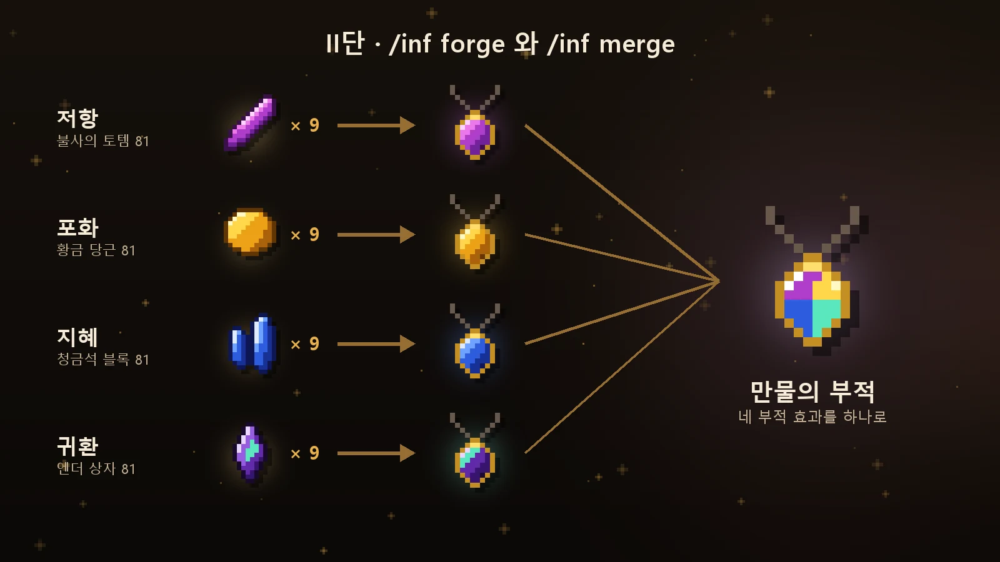
재료 81개 → 조각 9개 → II단 부적(/inf forge). 넷을 모두 모으면 /inf merge로 만물의 부적.
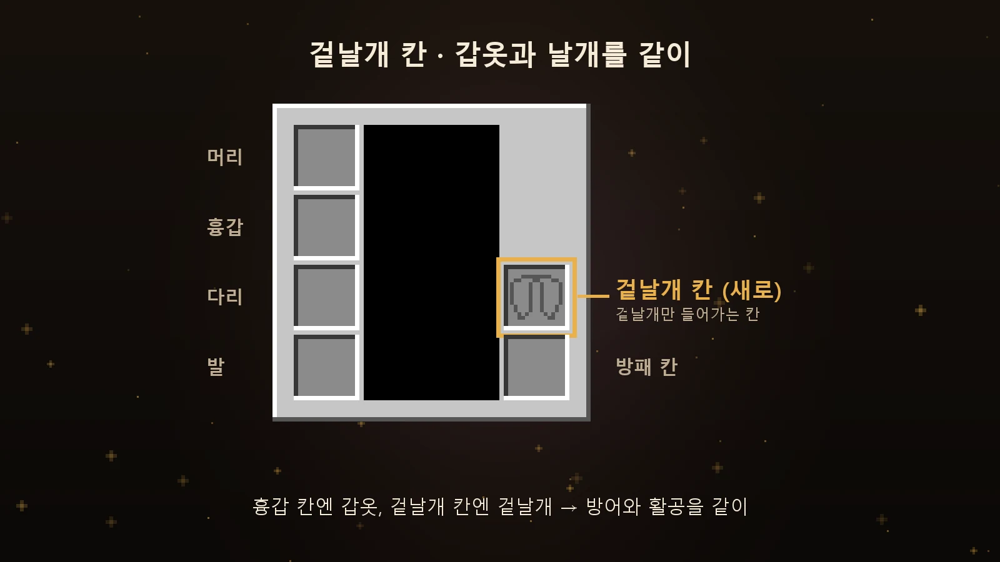
흉갑 칸엔 갑옷, 겉날개 칸엔 겉날개. 방어와 활공을 같이 얻습니다.
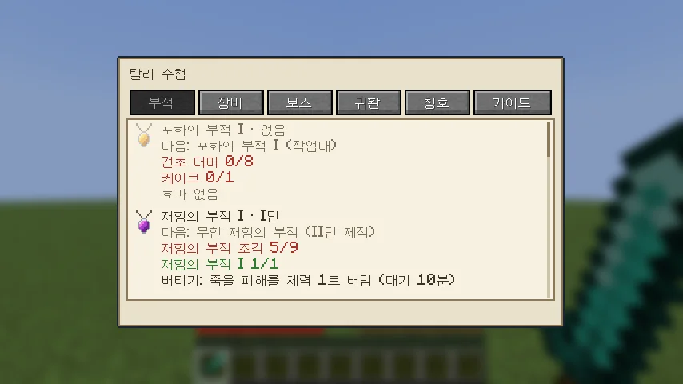
탈리 수첩 부적 탭. 계열마다 지금 단계와 다음에 모을 재료가 보입니다.
보스 탭. 부르는 법과 아직 못 받은 보스 인챈트 책.
칭호 탭. 업적으로 얻은 칭호를 골라 이름 앞에 붙입니다.
생존 부적 II단 · 만물 · /inf forge
부적 원칙 부적은 번거로운 엔드 콘텐츠를 위한 편의입니다. 그 콘텐츠를 이미 통달한 사람에게, 되풀이할 수고를 건너뛰게 해 주는 효과를 줍니다. 그래서 초반에 싸게 손에 넣는 부적은 두지 않습니다.
부적은 가방이나 왼손에 지니고만 있으면 효과가 납니다. 재료 81개를 9개씩 묶어 조각을 만들고, 조각 9개에 열쇠 재료를 더해 /inf forge로 만듭니다. 사다리는 조각 → II단 → 만물 → 각성 하나이고, 세트 효과는 II단과 만물의 부적에만 붙습니다.
작업대로 만들던 I단 부적은 0.8.0 베타 3에서 없어졌습니다. 가진 옛 부적은 만든 재료로 돌려받습니다 (가방에 자리가 있을 때).
-
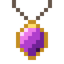
저항의 부적
불사의 토템 81
지니고 있으면 늘 저항 II.
-
포화의 부적
황금 당근 81 + 마법이 부여된 황금 사과
배가 고프지 않습니다. 저항의 부적과 같이 지니면 최대 체력 +20.
-
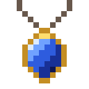
지혜의 부적
청금석 블록 81 + 네더의 별
30초마다 경험치가 들어옵니다. 무한 겉날개로 날고 있으면 3배. 죽어도 레벨을 잃지 않습니다 (0.8.0 베타 3부터).
-
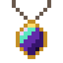
귀환의 부적
엔더 상자 81 + 드래곤 머리
오버월드 · 네더 · 엔드에 한 곳씩 집을 저장하고 명령 하나로 돌아갑니다. 무한 도구와 같이 지니면 심층암을 한 번에 캡니다.
-
만물의 부적
II단 부적 4종 →
/inf merge네 부적의 효과(죽어도 레벨을 잃지 않는 경험치 보존 포함)와 세트 효과를 한 칸에. 생존 부적의 마지막 목표이고, 엔드 보스 재료로 한 번 더 각성시킬 수 있습니다.
전투 부적 투지 · 명사수
싸우며 모이는 재료로 조각을 만들고, 조각 9개에 열쇠 재료를 더해 /inf forge로 만듭니다. 만물의 부적과 세트 효과에는 들어가지 않고, 플레이어끼리 싸울 때도 똑같이 듣습니다.
-
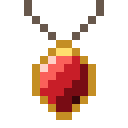
투지의 부적
블레이즈 막대 81 + 위더 스켈레톤 해골
근접 공격력 +2(맨손 포함). 최대 체력 10 이상인 몹이나 플레이어를 처치하면 체력 4 회복.
-
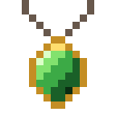
명사수의 부적
브리즈 막대 81 + 삼지창
활을 더 빨리 당기고, 석궁은 빠른 장전 한 단계 더. 일반 · 분광 화살이 줄지 않습니다 (물약 화살은 줄어듭니다).
모래 지네 첫 바이옴 보스 · 0.8.0
사막에 깎은 사암 십자(가운데 + 네 방향)를 놓고 가운데 위에 선인장을 세운 뒤, 선인장에 모래 미끼를 쓰면 땅이 울리고 3초 뒤 모래 지네가 솟아오릅니다. 제단 둘레 반지름 16칸 땅의 60% 이상이 모래 · 사암이어야 하고, 잡은 뒤 같은 제단은 20분 쉽니다.
지네 세 장은 0.8.0 베타 1의 시험 화면에서 화면 표시(단축바 · 손)를 걷어 낸 것입니다.
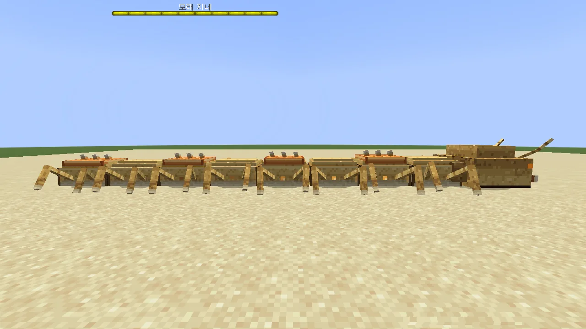
모래 지네 옆모습. 갑각 마디가 하나라도 남아 있으면 머리가 받는 피해가 80% 줄어듭니다.
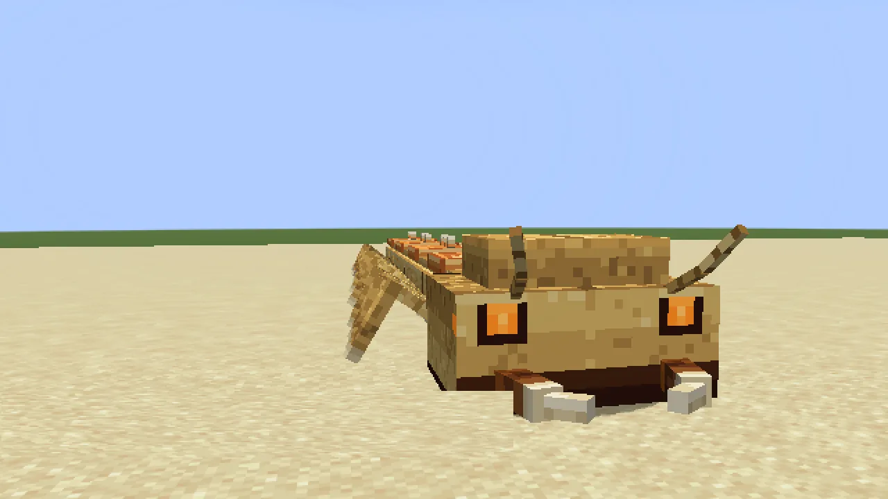
모래 지네 머리. 공격 전에 턱 집게가 벌어지며 예고합니다.
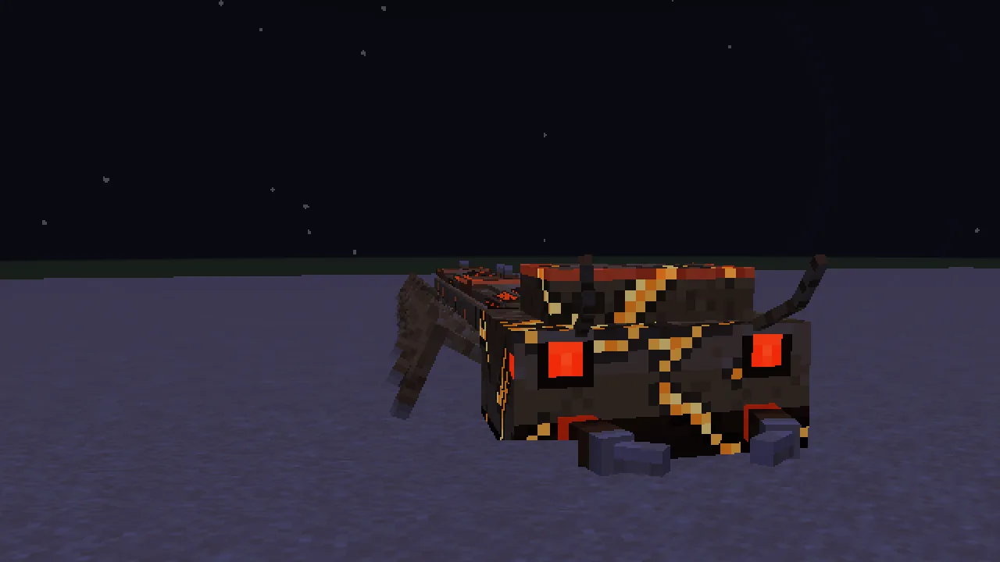
2페이즈. 껍데기가 갈라져 빛나고, 모래 폭풍 안에서는 화면 가장자리가 모래빛으로 덮이며 마디 벌레가 기어 나옵니다.
-
갑각 마디
마디 가운데 갑각 4개가 하나라도 남아 있으면 머리가 받는 피해가 80% 줄어듭니다. 땅속에서 나올 때 깨진 갑각 하나가 되살아납니다 (한 싸움에 2번까지).
-
땅속에서 오는 공격
땅속을 다니다 발밑에서 솟구치고, 모래를 부채꼴로 뿜고, 몸으로 고리를 만들어 조입니다. 모두 미리 예고가 보입니다.
-
높은 곳도 안전하지 않음
지표보다 4칸 넘게 높은 곳에 3초 넘게 있으면 모래 덩이를 던집니다.
-
2페이즈
체력 420(근처에 2명 이상이면 650)이 절반 아래로 내려가면 모래 폭풍이 일고 마디 벌레가 나옵니다.
부르기와 보상
보상은 제단 위에 떨어집니다. 모래 지네 턱(트로피) · 금 · 거미 눈에 더해, 처치에 참여한 사람마다 사막 핵 1개와 지네 전용 인챈트 책 1권, 칭호 "모래 사냥꾼"을 받습니다.
-
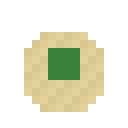
모래 미끼
압축 모래 4 + 선인장 4 + 거미 눈
제단 가운데 선인장에 쓰면 모래 지네가 깨어납니다. 압축 모래는 모래 9개로 만듭니다.
-
사막 핵
모래 지네 처치에 참여하면 1개
탐험가의 부적 재료이고, 부적에 새기면 효과가 켜집니다.
-
탐험가의 부적
작업대 가운데 나침반 · 네 변 금 주괴 · 네 귀퉁이 중 한 곳에 사막 핵
사막 핵이 새겨진 채로 나옵니다. 지니고 있으면 어느 바이옴에서든 이동 속도 +8%. 핵은 수첩 부적 탭의 [새기기] 단추(두 번 눌러 실행)나, 부적을 다른 손에 들고 핵을 써서 새깁니다. 바이옴 보스마다 핵이 하나씩 늘어날 자리이고, 만물의 부적과는 따로 씁니다.
지네 전용 인챈트
-
모래걸음 신발
모래 · 사암 위에서 이동 속도 +15%.
-
강인함 투구
새로 걸리는 해로운 효과(구속 · 독 · 위더 등)의 시간이 35% 줄어듭니다. 무한 지속 효과와 직접 마신 물약은 그대로입니다.
보스 장비 보스 4종 · 0.9.0
보스는 장비를 직접 떨구지 않고, 처치에 참여한 사람마다 전용 재료를 줍니다. 그 재료로 지금 쓰는 네더라이트 장비(공명의 활은 활)를 보스 장비로 올립니다. 0.9.0부터 공허 고래 심장과 드래곤 알도 참여자마다 하나씩 받습니다.
보스 장비 세 장은 0.9.0 베타 1의 시험 화면에서 화면 표시(단축바 · 손 · 채팅)를 걷어 내고 가운데를 잘라 키운 것입니다.
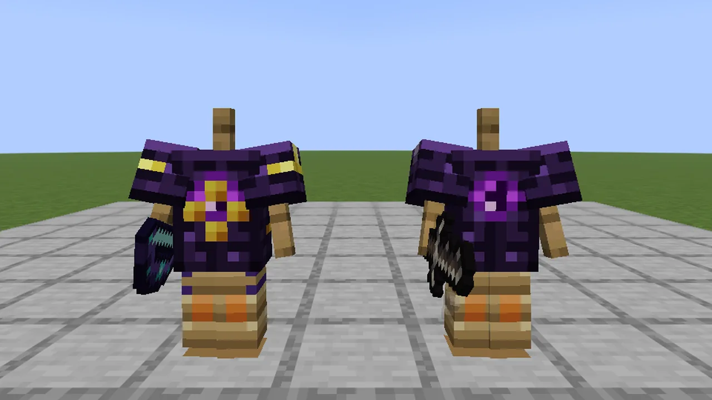
보스 장비 넷. 장식 무늬도 바탕 네더라이트 장비처럼 겹쳐집니다 (왼쪽).
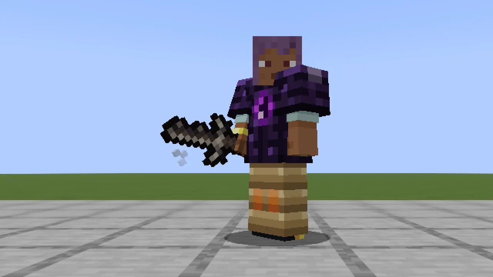
고유 효과는 검은 주손에 들 때, 갑옷은 입었을 때 켜집니다.
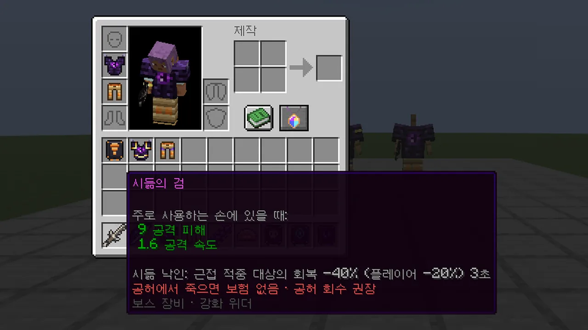
시듦의 검 툴팁. 효과 수치는 서버 설정값을 그대로 보여 줍니다.
보스마다 장비 하나
-
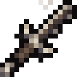
시듦의 검
강화 위더 · 위더 척추 · 바탕 네더라이트 검
시듦 낙인: 근접 적중 대상의 회복 -40% (플레이어 -20%) 3초
-
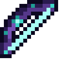
공명의 활
공허 고래 · 공허 고래 심장 · 바탕 활
하늘 사냥: 꽉 당긴 화살이 공중의 몹에게 피해 +20% (플레이어 대상 제외)
-
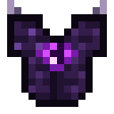
용의 흉갑
강화 드래곤 · 드래곤 알 · 바탕 네더라이트 흉갑
용의 기세: 체력이 40% 아래로 내려가면 흡수 2칸 5초 · 주위 적대 몹 · 결투 상대 밀쳐냄, 재사용 대기 90초 (죽는 피해에는 발동 안 함)
-
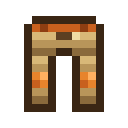
갑각 각반
모래 지네 · 지네 갑각 · 바탕 네더라이트 각반
마디 갑각: 받는 투사체 피해 -15%
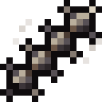
고유 효과는 검은 주손에 들 때, 활은 어느 손이든 들 때, 갑옷은 입었을 때 켜집니다.
만드는 법
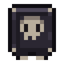
보스 강화 견본작업대 가운데 네더라이트 강화 견본, 위 · 왼쪽 · 오른쪽에 전용 재료 3개, 아래에 네더라이트 주괴- 대장장이 작업대견본 + 네더라이트 장비(공명의 활은 활) + 전용 재료 1개. 장비 하나에 재료 4개
- 그대로 이어짐인챈트 · 재가공 접두어 · 업글권 불괴(보스 갑옷만) · 모루 이름 · 장식 무늬
수치
- +1검 공격력 (네더라이트 8 → 9)
- +1갑옷 방어 강도, 부위마다 (방어는 그대로)
- +0.25공명의 활 화살 기본 피해
- ×1.25내구도
- 불 · 폭발불 · 용암 · 폭발에 사라지지 않음
공허 사망 보험 없음 보스 장비도 사망 보험 대상입니다. 다만 공허에서 죽으면 보험이 작동하지 않는 규칙은 보스 장비도 그대로라, 엔드에서 쓸 장비에는 공허 회수 인챈트를 권합니다. 툴팁과 수첩에도 이 안내가 붙습니다.
앞으로 바이옴 보스가 늘 때마다 장비가 하나씩 더해집니다. 다음은 정글 보스 덩굴 수호목의 뿌리 신발, 그다음은 버섯 들판 보스 포자 모체의 균사 투구입니다.
무한 장비와 편의
-
무한 겉날개
겉날개 9개로 만듭니다. 부서지지 않고 네더라이트 흉갑만큼 막아 주며, 왼손 폭죽이 저절로 채워집니다.
-
무한 도구
네더라이트 곡괭이 · 도끼 · 삽 · 괭이를 9개씩. 부서지지 않고, 곡괭이는 광석을 바로 녹이며, 넷을 만능 도구 하나로 합칠 수 있습니다.
-
업글권
무한 도구 4종을 다 모으면 한 장. 지금 입은 갑옷을 부서지지 않게 바꿉니다.
-
겉날개 칸
인벤토리 방패 칸 위에 겉날개만 들어가는 칸이 생겼습니다. 갑옷과 날개를 같이 입고, 갑옷 위에 날개가 보입니다.
-
탈리 수첩
인벤토리의 탈리 버튼이나 단축키로 여는 모드 화면. 부적 · 장비 · 보스 · 귀환 · 칭호 · 가이드 탭에서 단계 · 다음 재료 · 제작 · 귀환 지점 · 폭죽 설정을 봅니다.
-
불사의 토템
64개까지 겹치고, 손에 들지 않아도 가방 어디에 있든 죽는 순간 발동합니다.
-
사망 보험
토템 64개로 한 번 가입하면, 죽어도 부적 · 조각 · 무한 장비 · 보스 장비가 부활할 때 제자리로 돌아옵니다. 공허에서 죽으면 작동하지 않습니다.
개발 기록
-
M0
뼈대와 서버
Fabric 프로젝트와 집 서버 꾸러미(실행 · 백업 · 화이트리스트)를 만들었습니다.
-
M1
데이터팩 이식
무한 시리즈 다섯 개를 모드로 다시 만들어 II단 부적 · 무한 장비 · 사망 보험이 되었습니다. 수치는 원본 그대로, 설정 파일로 뺐습니다.
-
M2
I단 부적과 메뉴, 새 월드
초중반 목표인 I단 5종,
/inf메뉴, 레시피 북을 넣고 새 월드를 열었습니다. 0.8.0 베타 3에서 I단 폐지. -
M2.5
클라이언트 모드
서버에만 돌던 모드를 모드팩으로 바꾸고, 겉날개 칸 · 전투 부적 · 재사용 대기 표시를 더했습니다. 서버와 버전이 다르면 접속할 때 알려 줍니다.
-
M3
재가공 · 강화 위더 · 결투 0.3.0
대장장이 작업대에서 장비에 무작위 접두어를 붙이는 재가공, 다이아몬드 블록으로 부르는 강화 위더와 보스 전용 인챈트, 죽지 않는 결투를 넣었습니다.
-
M4
엔드: 공허의 부적 · 공허 고래 · 강화 드래곤 0.4.0 ~ 0.5.0
공허에서 살려 주는 공허의 부적, 업적과 칭호, 엔드 바깥 섬의 보스 공허 고래, 강화된 엔드 크리스탈로 부르는 강화 드래곤과 만물의 부적 각성.
-
U2
탈리 수첩 0.7.0
인벤토리 버튼과 단축키로 여는 모드 화면 "탈리 수첩"이 상자 메뉴를 대신합니다. 첫 접속 안내 · 가이드 · 크리에이티브 탭도 같이.
-
M5
모래 지네와 탐험가의 부적 0.8.0 베타 3
첫 바이옴 보스 모래 지네. 땅속을 다니다 솟구치고, 갑각 마디를 깨야 머리가 약해집니다. 처치하면 나오는 사막 핵으로 탐험가의 부적을 만들고, 지네 전용 인챈트 모래걸음 · 강인함도 더했습니다. 이름 · 문구 · 색을 한 규칙으로 정리하고, 효과는 직접 그린 입자로 바꿨습니다.
-
M6a
보스 엔드 장비 0.9.0 베타 1 · 최신
보스 넷이 참여자마다 전용 재료를 주고, 그 재료로 네더라이트 장비를 시듦의 검 · 공명의 활 · 용의 흉갑 · 갑각 각반으로 올립니다. 장비마다 고유 효과가 하나씩 있고, 인챈트 · 재가공 접두어는 그대로 이어집니다.
-
다음
M6b 덩굴 수호목(정글) · 뿌리 신발 다음 베타
두 번째 바이옴 보스는 정글의 고정형 보스 덩굴 수호목. 그 재료 수호목 심재로 뿌리 신발을 만듭니다.
플레이하려면
모드팩(.mrpack)과 서버용 jar는 yh-yeop/releases에서 받을 수 있습니다. 소스는 공개하지 않습니다. 함께 플레이하는 서버는 친구들끼리 쓰는 화이트리스트 서버입니다.
설치
- Modrinth App(또는 Prism Launcher)에서 릴리스의
.mrpack을 가져옵니다. Minecraft 26.3 · Fabric · 필요한 모드가 한 번에 깔립니다. - 친구 서버라면 운영자에게 닉네임을 알려 화이트리스트에 오른 뒤, 따로 받은 주소로 접속합니다. 직접 서버를 열려면 서버용
talicraft-*.jar를 Fabric 서버의mods에 넣습니다 (Fabric API 필요). - 새 버전이 나오면: Modrinth App이라면 '모드팩 업데이트' 프로그램으로 인스턴스를 그대로 둔 채 바꿀 수 있어요. 새 모드팩을 다시 가져오거나, 인스턴스
mods폴더의talicraft.jar만 새 것으로 바꿔도 됩니다. 서버와 버전이 다르면 접속할 때 알려 줍니다.
들어가면 평소처럼 야생입니다. 인벤토리의 탈리 버튼이나 채팅의 /inf로 탈리 수첩이 열리고, 부적 탭에서 계열마다 다음에 모을 재료가 보입니다. 초중반에는 재가공 · 모래 지네 · 탐험가의 부적이, 엔드까지 가면 보스 장비가 목표가 됩니다.